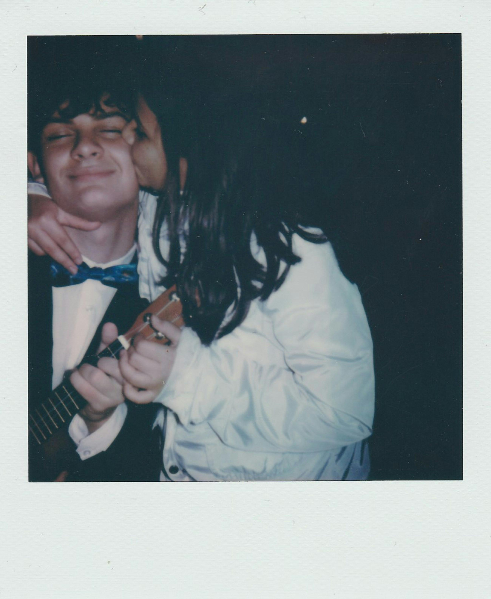
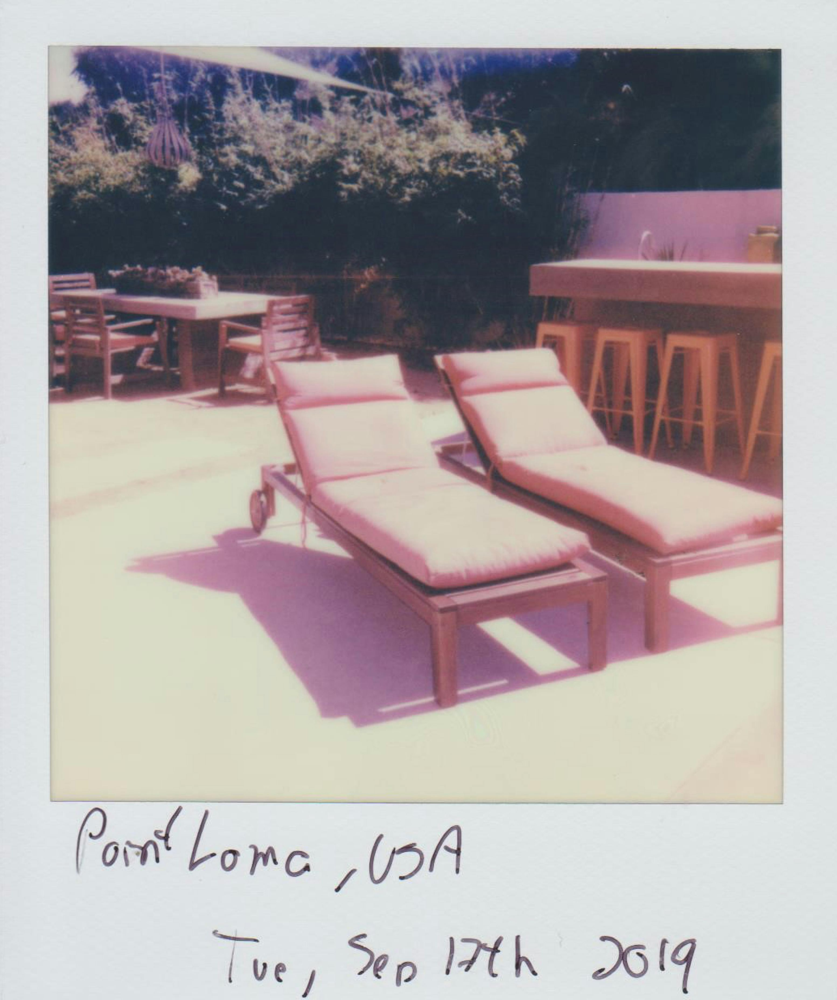
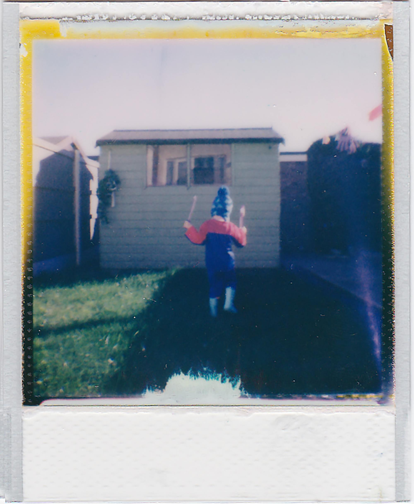
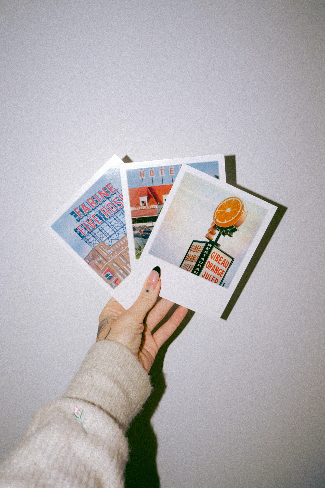

frames from the real world


Before the algorithm decided
what memories looked like.
"We used to shoot 24 frames
and wait a week
to see if we were smiling."
The shutter clicks. The frame ejects. You shake it — you know you're not supposed to, but you do anyway. Ten seconds later, the world appears on a small white square. Imperfect. Irreversible. Yours.

frames from the real world
on the death of imperfection
In the early 2000s, a photo was an event. You had 24 shots — maybe 36 if you were feeling generous. You thought before you pressed. You didn't know if the light was right. You hoped.
Now we shoot a hundred versions of the same moment, pick the best one, run three filters, and still feel like something's missing.
What's missing is the accident. The blur. The red eyes. The thumb in the corner. The proof that you were really there.






the era we're grieving
MySpace top 8s. Flip phones. Burnt CDs with handwritten tracklists. AIM away messages that said more about you than any Instagram bio ever could.
A polaroid from 2004 feels more alive than a 4K video from last week. It has weight. It has grain. It has the smell of the developing chemical and someone's handwriting on the back.
We traded permanence for performance. The polaroid is the antidote.
click.
shake.
remember.
"A bad photo is still
a real photo."
Shoot on film. Or don't. Just remember to look up.
keep shooting.